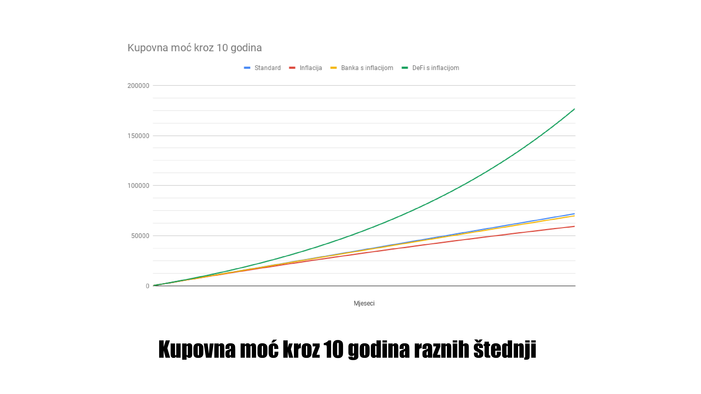
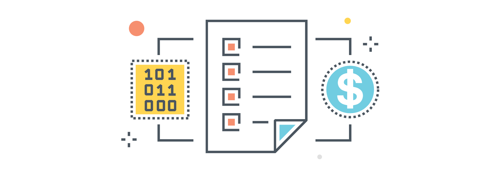
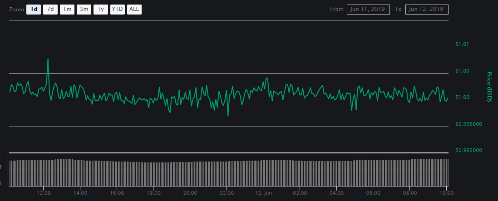
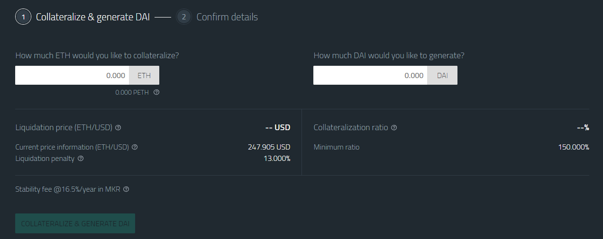
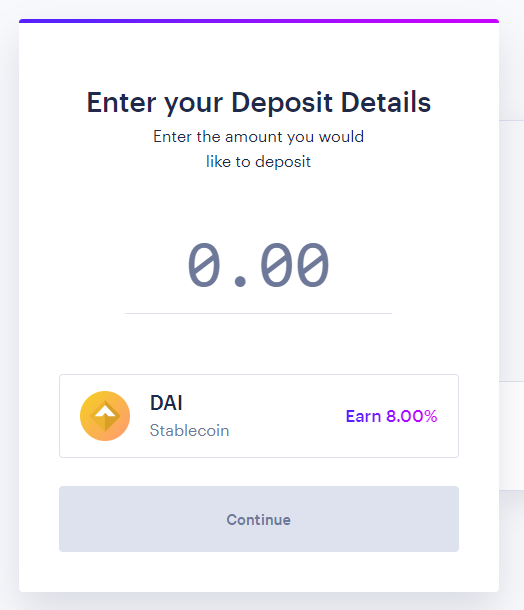
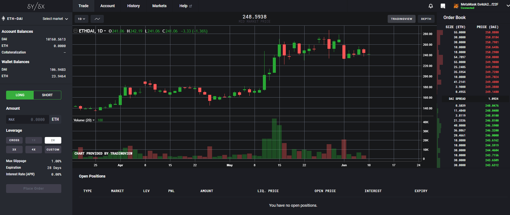

DeFi pokret, ili pokret Decentraliziranih (Otvorenih) Financija, je relativno nova upotreba blockchain tehnologije koja svima u svijetu omogućuje da postanu svoja vlastita banka - bez posrednika, regulatora, i blokada.
Dok je tipična štednja u RH oko 1%, a maksimalna trenutna efektivna kamatna stopa koju nudi, primjerice, PBZ, stoji na oko 1.6% godišnje za najpovoljniju oročenu štednju, DeFi kamate kreću se u prosjeku oko 10% godišnje. Uz inflaciju od minimalno 2% godišnje postaje očito da štednja u banci uzrokuje gubitak kupovne moći.

No, kako je moguće da je kamata na blockchainu veća od službene? Kako može postojati kamata na blockchainu ako ne postoji posrednik koji osigurava da se zajmovi isplate po dogovorenim uvjetima? Krenimo ispočetka.
Blockchain tehnologija, kao što smo ranije objasnili, matematičkom sigurnošću omogućava globalnu i decentraliziranu razmjenu poruka. "Poruka" može biti nešto poput poruke u Whatsappu, može biti web sadržaj do kojeg inače ne možete doći zbog raznih prepreka na razini države (Veliki Kineski Vatrozid), a može biti i financijska - od "Ana šalje Borisu 1 bitcoin" do kompleksnijih slučajeva poput "Ana posuđuje 5 WBTC od Borisa pod uvjetom da mu vrati 6 WBTC za 6 mjeseci, a za polog ostavlja 60000 DAI". Upravo ovaj potonji primjer je srž otvorenih financija.
Dok blockchain poput Bitcoina nudi osnovnu mogućnost slanja vrijednosti s kripto adrese A na kripto adresu B u roku od nekih sat vremena, napredniji scenariji zahtjevaju naprednija rješenja. Tu na scenu stupa Ethereum - blockchain sustav koji omogućava brzo (unutar 15 sekundi) izvršenje kompleksnih programa koje nazivamo "pametni ugovori".

Pametni ugovori sadrže određene funkcije koje se izvršavaju pod određenim uvjetima. Primjerice: "ako mi netko pošalje 1000 Ethera, prepiši hipoteku moje kuće na njega". Kriptovaluta Ether koja se koristi kao platno sredstvo na Ethereum blockchainu je stoga programabilni novac, a ovakav pristup automatizaciji razmjene vrijednosti rješava nas bilježnika, birokratskih procedura, i dugih čekanja.
No, kao što znamo iz lekcije koju zovemo "2018.", vrijednost kriptovaluta (uključujući i coinove poput Bitcoina, Ethera, i tokene poput OmiseGo, Maker, BAT itd.) je apsurdno volatilna i štedjeti u nekoj od njih je izrazito riskantan potez. Ta volatilnost dovela je do potrebe za stabilnom valutom (stablecoin) koja živi na blockchainu, ali odgovara vrijednosti neke fiat valute kao što je američki dolar. Na taj se način omogućuje e-trgovina na blockchainu jer cijene mogu biti izražene u valutama poznatim kupcima umjesto u ezoteričnim tokenima upitne vrijednosti.
Postoji više desetaka stablecoinova od kojih gotovo svi funkcioniraju na isti način: tvrtka koja stoji iza tog coina u banci ima ekvivalent u fiat valuti. Tako, ako postoji primjerice 1000 GUSD tokena (kripto-dolar tvrtke Gemini braće Winklewoss), tada na bankovnom računu koji održava taj paritet mora biti točno 1000 USD. Ako netko zatraži isplatu svojih GUSD u USD, tolika količina tokena se ujedno programabilno uništava kako bi se paritet održao.

Takav je pristup efikasan i brz, no podliježe centralizaciji - ako tvrtka Gemini propadne ili se sredstva na računu zaplijene, svi GUSD tokeni u cirkulaciji postaju bezvrijedni. Slična situacija se odvija upravo sada s stablecoinom Tether (USDT) iza kojeg stoji jedna od najkontoverznijih burzi - Bitfinex - i čija tvrtka Tether co. upravo prolazi kroz sudski proces kojeg je protiv njih pokrenuo državni tužilac New Yorka. Ukoliko tvrdnje iz tužbe budu dokazane, sva zaliha USDT tokena postati će bezvrijedna, što je biti veliki udarac svim burzama koje ga nude.
Da bi se ta ranjivost na centralizaciju izbjegla, kreiran je DAI stablecoin - algoritamski token koji odgovara vrijednosti američkog dolara ali živi u potpunosti na blockchainu pa je stoga nezaustavljiv i nemoguć za zaplijeniti. DAI token "posuđuje" se od blockchaina tako da se u pametni ugovor pošalje barem 150% te vrijednosti Ethera. Ukoliko vrijednost Ethera padne toliko da omjer depozita padne ispod 150%, depozit se automatski likvidira.
Primjer: cijena Ethera je 200 USD a ja želim 100 DAI kako bih platio ulaznicu za https://defi.academy. Da bih dobio 100 DAI, šaljem 1 eth u CDP pametni ugovor (collateralized debt position - kolateralizirani dug) i odabirem 100 DAI kao izlaz. Zbog cijene od $200/eth, moj omjer kolateralizacije je 200%, siguran sam od likvidacije. Ako cijena Ethera poraste, sve što trebam učiniti je vratiti 100 DAI u CDP i vraća mi se moj sada vrjedniji Ether. Ako cijena Ethera padne, mogu vratiti DAI i izvaditi Ether prije nego nastupi likvidacija.

Možda se pitate - zašto bih tako "posudio" DAI a ne prodao Ether za punih 200 DAI bez rizika? Dakako, i to je opcija ali tada se gubi mogućnost zarade na dizanju vrijednosti Ethera. U gornjem primjeru, čak i ako vrijednost Ethera poraste na $1000, nama je još uvijek potrebno samo originalno posuđenih 100 DAI da taj Ether vratimo u svoj kripto novčanik.
Ovakvo kreiranje DAI valute daje nam mogućnost da imamo stabilnu valutu na blockchainu koja se zbog praktičnosti, brzine i smanjenih troškova transakcija sve više koristi u raznim web trgovinama.
Otvorene financije omogućuju nam da sve to povedemo korak dalje. Umjesto da se kockamo rastom cijene kriptovaluta i tokena, kupovanje DAI-a omogućuje nam da ga mi sami posuđujemo drugima i zaradimo na kamati. Pametni ugovor osigurava da je zajmoprimac ostavio dovoljno kolaterala da budemo sigurni u vraćanje duga.
Postoje mnogi sustavi za automatizirano pozajmljivanje DAIa, i u prosjeku se kamata koja se na njima može zaraditi kreće od 5 do 15% godišnje. Upravo jer su svi ti sustavi zapravo pametni ugovori, nije moguće da takva "banka" propadne ili nestane, niti je moguće da autori tih ugovora pobjegnu s novcem.

Dok u ovakvom DeFi sustavu štednje nema osiguranja poput onoga od 100,000 eura kojeg nude europske banke, to osiguranje ovdje nije ni potrebno - jedini način da se sustav uruši je da padne cijeli blockchain, što je matematički nemoguće.
Neki od primjera DeFi alata koji se mogu koristiti za automatsko posuđivanje svojih kriptovaluta i zaradu na kamatama su sljedeći.
Set pametnih ugovora koji dinamički određuje kamatu prema ponudi i potražnji. Ovisno o stanju tržišta, kamata se kreće u prosjeku od 4% do 15% godišnje. Čar CF-a je da se iznos koji posuđujete automatski gomila, tj. kamatu nije potrebno zasebno izvlačiti već se zarađena kamata odmah pripisuje depozitu i povećava daljnji rast. Takva složena kamata može rezultirati u velikim dobicima preko duljih perioda vremena.

U sličnom ruhu kao CF, DyDx je set pametnih ugovora koji osim posuđivanja i zarade na kamatama dopušta korisnicima da se kockaju s cijenom kriptovaluta uz polugu. Uz dovoljno velik depozit, DyDx dopušta korisnicima da uz polugu do 4x uzimaju zajam Ethera i time se oklade na njegov rast ili pad. Sve to rješava se algoritamski i automatski od strane pametnih ugovora, što taj sustav čini vječnim - ne postoji regulator koji ga može zaustaviti.
Nuo i Dharma su malo zatvoreniji sustavi privatnih pametnih ugovora koji ovise o web sučeljima autora tih projekata. To znači da je rizik nestanka tih firmi malo realniji, ali je zato kamata veća i stabilnija - ti sustavi primjerice nude stabilnu i fiksnu kamatu od 11%, no zaključavaju vaša sredstva, tj. ne dopuštaju lako izvlačenje u bilo kojem momentu za razliku od DyDx i CF. To vam može naškoditi u slučajevima kad Ether naglo padne i ugrozi vaš depozit u MakerDAO CDP sustavu, ili kad poželite kupiti nazad Ether po sada mnogo nižoj cijeni a ne možete jer je vaš DAI zaključan.
Hodland.io je usluga koja nudi arbitražu između svih gore navedenih opcija i još nekih. Hodland preuzima kontrolu nad vašim DAI sredstvima i garantira godišnju kamatu od 5%, bez obzira na to koliko blockchain kamata padne ili poraste (razliku nadoknađuje / zadržava Hodland). Hodland svojim korisnicima omogućava instantno izvlačenje sredstava, što ovaj projekt čini kvalitetnim kompromisom između rješenja poput Nuo / Dharma koji zaključavaju sredstva, i DyDx / CF koji imaju volatilne kamatne stope pa su stoga nepredvidljivi izvor pasivne zarade. Bitno je napomenuti da Nuo, Dharma, i Hodland zahtijevaju puno povjerenje u timove iza tih projekata.
Ukoliko biste željeli naučiti više o tim rješenjima i kako ih koristiti, koji su rizici i kako biti pažljiv kod odabira, tvrtka Bitfalls.com u partnerstvu s udrugama UBIK.hr i Blockada.io organizira radionicu na tu temu 26.09.2019. Za popust od 20% uz dodatnih 20% za plaćanje kriptovalutama posjetite stranicu događaja ovom poveznicom: https://defi.academy/?code=MrezaFriends.